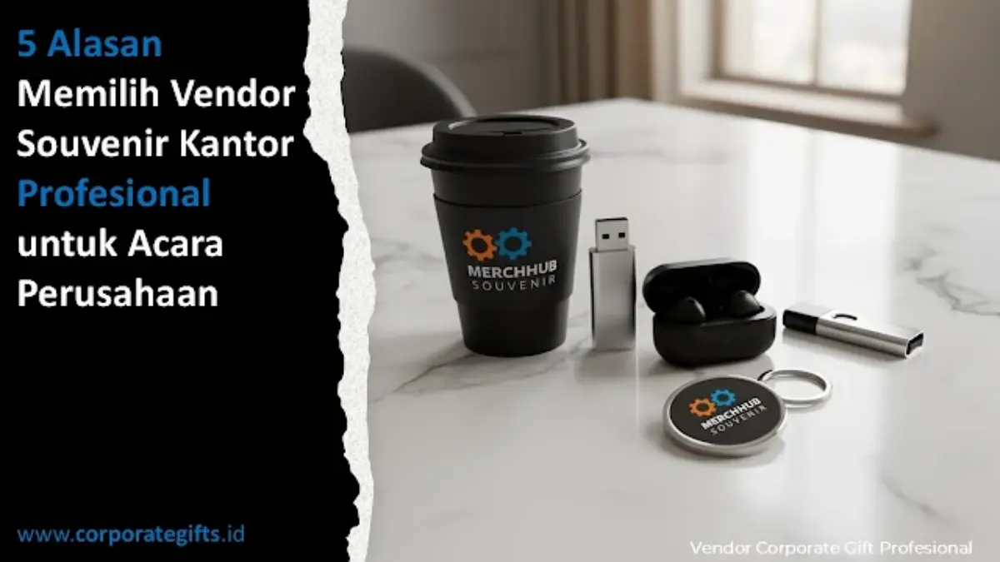

Corporate Gifts ID - Memilih vendor souvenir kantor profesional merupakan langkah strategis krusial bagi perusahaan karena menjamin kepastian kualitas mutu produk, ketepatan jadwal produksi dan distribusi, keleluasaan kustomisasi logo sesuai brand guideline, kelengkapan variasi katalog, hingga dukungan konsultasi dan garansi purna jual (after-sales). Kelima pilar ini memastikan cinderamata acara korporat tampil rapi, bebas cacat, dan efektif memperkuat citra bisnis Anda di mata para pemangku kepentingan.
Dalam setiap penyelenggaraan agenda perusahaan seperti seminar nasional, rapat umum pemegang saham (RUPS), employee gathering, hingga perayaan hari jadi korporat, souvenir bukanlah sekadar buah tangan pelengkap. Cinderamata yang diserahkan bertindak sebagai representasi nyata dari standar mutu, apresiasi, dan profesionalisme institusi pengirim.
Ketika cinderamata yang dibagikan memiliki cacat produksi, logo buram, atau bahkan terlambat tiba di lokasi acara, reputasi korporasi yang dibangun bertahun-tahun dapat tercoreng seketika. Artikel ini membedah lima alasan fundamental mengapa bermitra dengan vendor souvenir kantor profesional menjadi kunci keberhasilan agenda korporat Anda.
Poin Kunci Panduan Memilih Vendor Souvenir:
- Standar Kontrol Kualitas Teruji: Vendor profesional menerapkan inspeksi bertahap mulai dari pemilihan bahan baku, proses cetak logo, hingga pengemasan akhir bebas cacat.
- Jaminan Tenggat Waktu Ketat: Manajemen produksi terintegrasi memastikan barang selesai dan didistribusikan tepat waktu sebelum jadwal acara seremonial dimulai.
- Kepatuhan Brand Identity: Eksekusi logo dan tata warna Pantone dikerjakan secara presisi melalui teknologi cetak industri mutakhir.
- Mitra Konsultatif Terpercaya: Menyediakan asistensi kurasi produk, simulasi anggaran transparan, mockup 3D digital gratis, serta garansi penggantian barang retur.
1. Jaminan Kualitas Produk dan Standar Mutu Konsisten
Vendor souvenir kantor profesional tidak sekadar menjual barang komoditas jadi, melainkan menghadirkan produk yang telah melalui pengujian kelayakan material. Mereka memahami bahwa setiap item yang diserahkan ke tangan klien akan mencerminkan kelas dan reputasi perusahaan pemesan.
Keunggulan standar mutu pada vendor terpercaya tercermin dari beberapa parameter teknis berikut:
- Spesifikasi Bahan Sesuai Janji: Menggunakan material berstandar mutu tinggi, seperti stainless steel SUS 304 food-grade untuk tumbler kantor, kulit sintetis berserat rapat untuk agenda, serta kanvas tebal tahan sobek.
- Finishing Cetak Rapi dan Presisi: Hasil sablon tidak mudah mengelupas, grafir laser memiliki kedalaman merata tanpa membakar permukaan barang, serta bordir komputer tersusun rapat.
- SOP Quality Control (QC) Multi-Tahap: Pengecekan dilakukan per unit sebelum proses packing dilakukan guna menyingkirkan produk baret, cacat tombol, atau noda tinta.
- Penyediaan Sampel Fisik (Dummy Approval): Klien diberikan kesempatan menginspeksi sampel produk secara langsung sebelum izin produksi massal (mass production) diterbitkan.
2. Ketepatan Waktu Produksi dan Keandalan Distribusi
Dalam ekosistem korporasi, jadwal acara (event schedule) bersifat mengikat dan tidak dapat ditawar. Keterlambatan pengiriman souvenir bahkan hanya dalam hitungan beberapa jam dapat menggagalkan momentum seremonial yang telah dirancang berbulan-bulan.
Vendor souvenir kantor profesional mengoperasikan sistem manajemen pesanan (order fulfillment) yang sangat disiplin dengan alur kerja terstruktur:
- Konsultasi Kebutuhan dan Legalitas SPK: Penyelarasan jumlah item, spesifikasi, anggaran pagu, dan penerbitan Surat Perintah Kerja resmi.
- Approval Digital Mockup & Proofing: Konfirmasi tata letak logo dan warna paling lambat 24 jam setelah materi desain diterima.
- Penjadwalan Kapasitas Mesin: Alokasi slot lini produksi sesuai target tanggal penyelesaian (deadline).
- Packing Aman Sesuai Regulasi Ekspedisi: Pembungkusan lapis ganda (bubble wrap + hard carton) untuk mencegah kerusakan benturan fisik di perjalanan.
- Pengiriman Terjadwal dengan Resi Terlacak: Monitoring pengiriman langsung ke venue acara atau kantor cabang pemesan di seluruh Indonesia.

Penerapan alur produksi berstandar tinggi memastikan setiap paket cinderamata tersusun presisi dan terlindungi secara maksimal saat pengiriman.
3. Layanan Kustomisasi Logo dan Presisi Desain
Identitas visual korporat memiliki pedoman ketat (brand guidelines) yang mengatur proporsi lambang, tipografi resmi, hingga kode warna Pantone. Vendor amatir sering kali melakukan kesalahan fatal berupa distorsi rasio logo atau ketidaktepatan tone warna cetak.
Sebaliknya, vendor berpengalaman didukung oleh tim desainer produk in-house yang memahami kaidah grafis industri:
- Teknologi Cetak Beragam: Mampu mengeksekusi logo dengan metode yang paling cocok terhadap media barang, seperti UV flatbed print full colour untuk permukaan rata, laser marking untuk bahan metal stainless, atau blind deboss untuk kulit sintetis.
- Harmoni Visual Cinderamata: Membantu merancang komposisi visual yang estetik sehingga logo terlihat elegan tanpa kesan komersial yang berlebihan.
- Personalisasi Nama Individual: Memberikan opsi grafir nama masing-masing penerima pada produk premium seperti pena eksekutif atau tumbler, menciptakan kesan eksklusif yang sangat membanggakan.
4. Ragam Portofolio Produk Sesuai Kebutuhan Acara
Setiap event memiliki karakteristik audiens dan batas plafon anggaran yang berbeda-beda. Vendor profesional memiliki katalog komprehensif yang diklasifikasikan secara rapi untuk berbagai skenario korporat:
- Paket Seminar Kit Masif: Seminar kit terpadu berisi tote bag spunbond/kanvas, notebook spiral, dan pulpen promosi untuk audiens umum dalam jumlah ratusan hingga ribuan pcs.
- Executive Gift Set VIP: Set cinderamata eksklusif dalam kotak hardbox rigid beraksen magnetik khusus untuk dewan komisaris, pembicara kehormatan, dan tamu VVIP.
- Merchandise Fungsional Harian: Powerbank berkapasitas besar, card holder lanyard kulit, dan flashdisk kartu untuk menunjang aktivitas kerja kantor.
- Produk Keberlanjutan (Eco-Friendly): Cinderamata ramah lingkungan berbahan serat gandum, bambu alami, atau bahan daur ulang rPET guna mendukung target ESG perusahaan.
5. Dukungan Konsultasi Solutif dan Layanan After-Sales
Hubungan kerja dengan vendor profesional tidak berakhir saat tagihan dilunasi. Vendor tepercaya memposisikan diri sebagai mitra strategis pengadaan yang senantiasa mendampingi panitia sejak tahap perancangan konsep hingga acara usai diselenggarakan.
Wujud nyata dari komitmen purna jual (after-sales service) meliputi:
- Konsultasi Alokasi Budget: Memberikan formula alternatif produk terbaik yang tetap masuk dalam batas anggaran tanpa mengorbankan estetika.
- Garansi Penggantian Barang Cacat (Retur): Bersedia mengganti unit yang rusak akibat kesalahan produksi secara cepat dan tanpa birokrasi berbelit.
- Kelengkapan Administrasi Resmi: Menyediakan invoice resmi, kuitansi bermeterai, faktur pajak PPN terbitan e-Faktur, dan surat jalan kedinasan untuk kelancaran laporan pertanggungjawaban (LPJ) keuangan kantor.
Perbandingan Vendor Profesional vs Non-Profesional
Untuk memudahkan evaluasi internal panitia pengadaan, berikut tabel perbandingan karakteristik mendasar antara vendor berpengalaman dengan penyedia cinderamata perorangan:
| Aspek Evaluasi | Vendor Profesional (CorporateGifts.ID) | Vendor Konvensional / Non-Profesional |
|---|---|---|
| Kontrol Kualitas (QC) | Inspeksi multi-tahap, sampel fisik diapprove dahulu | Pengecekan acak, sering luput barang cacat |
| Ketepatan Waktu | Jadwal linier terikat SPK, mitigasi risiko keterlambatan | Sering molor dengan dalih antrean bengkel cetak |
| Kesesuaian Branding | Presisi warna Pantone, teknologi laser/UV canggih | Warna melenceng, sablon mudah terkelupas |
| Kelengkapan Katalog | Ratusan opsi terkurasi, paket seminar kit hingga VVIP | Pilihan terbatas pada item standar pasar |
| Dukungan Administrasi | Faktur pajak PPN, SPK resmi, kuitansi bermeterai | Nota manual tanpa legalitas perpajakan resmi |
| Garansi After-Sales | Jaminan retur penggantian unit cacat produksi | Tidak menerima klaim kerusakan pasca pengiriman |
Dampak Vendor Profesional terhadap Citra Bisnis
Souvenir berkualitas tinggi merupakan duta diam (silent ambassador) bagi reputasi korporasi Anda. Ketika tamu kehormatan atau klien penting menerima hadiah yang kokoh, berdesain elegan, dan berfungsi prima, secara psikologis mereka menyimpulkan bahwa perusahaan Anda mengelola seluruh operasional bisnisnya dengan standar ketelitian yang serupa.
Sebaliknya, souvenir yang cepat rusak atau dibuat secara asal-asalan akan mencerminkan kesan hemat yang keliru (cheap impression) dan mereduksi rasa hormat relasi bisnis. Oleh sebab itu, investasi dalam memilih vendor berpengalaman bukanlah pengeluaran konsumtif, melainkan investasi branding yang menjamin reputasi perusahaan tetap terjaga paripurna.
Pertanyaan Seputar Vendor Souvenir Kantor (FAQ)
Kesimpulan dan Solusi Pengadaan
Memilih vendor souvenir kantor profesional bukan semata-mata urusan bertransaksi jual beli produk fisik, melainkan membangun kemitraan strategis demi menjamin kelancaran agenda korporasi dan penguatan reputasi merek. Dengan jaminan kontrol kualitas ketat, ketepatan waktu pengiriman, keahlian kustomisasi logo presisi, serta proteksi after-sales transparan, Anda dapat menyelenggarakan acara perusahaan dengan tenang dan penuh percaya diri.

Ditulis oleh: Sholikhatun Nikmah
Creative Product Designer & Bespoke Packaging ConsultantDesainer visual dan konsultan kemasan kreatif di CorporateGifts.ID. Berpengalaman merancang visualisasi digital 3D pra-produksi, standarisasi warna logo Pantone, dan kurasi cenderamata kantor berkualitas prima untuk korporasi dan institusi di Indonesia.
Lihat Profil Lengkap & Panduan Lainnya